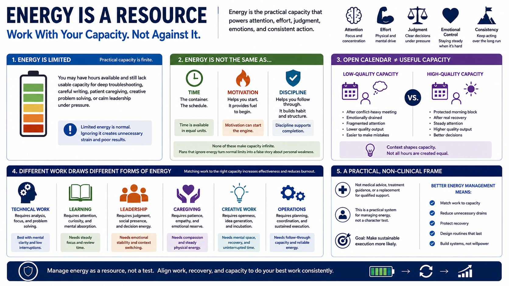

What It Means to Treat Energy as a Resource
Connecting to LMS... Progress: in progress

Narration
Treating energy as a resource means recognizing that practical capacity is limited. Energy affects attention, effort, judgment, emotional control, and the ability to keep acting consistently when work becomes difficult. A person may have hours available and still lack the usable capacity for deep troubleshooting, careful writing, patient caregiving, creative problem solving, or calm leadership under pressure.
Energy is different from time, motivation, and discipline. Time is the container. Energy is part of what determines what can realistically happen inside that container. Motivation can help someone start, and discipline can support follow-through, but neither one makes capacity infinite. When plans ignore energy, they often turn normal limits into a false story about personal weakness.
An open calendar does not automatically mean useful capacity. A two-hour block after a conflict-heavy meeting may not support the same work as a protected morning block after real recovery. Technical work, learning, leadership, caregiving, creativity, and operations all draw from different forms of capacity. Some tasks require analysis. Some require patience. Some require social presence. Some require sustained physical effort.
This course uses a practical, non-clinical frame. It is not medical advice, treatment guidance, or a replacement for qualified support. The goal is to manage energy as a system rather than a character test. Better energy management means matching work to capacity, reducing unnecessary drains, protecting recovery, and designing routines that make sustainable execution more likely.